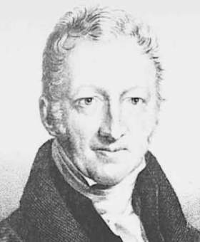

R.T.
Malthus (1766-1834) sosterrà che il capitalismo non è
in grado di migliorare le condizioni dei lavoratori, sia perché
la popolazione cresce in progressione geometrica (2,4,8,16, …)
mentre la produzione dei beni cresce in progressione aritmetica
(2,4,6,8,10, …), sia perché la classe salariata non
riceve redditi sufficienti ad assorbire la quantità crescente
di beni messa sul mercato dal nuovo sistema di produzione
industriale. Di conseguenza il capitalismo va incontro a crisi di
sovrapproduzione e di ristagno. Se il tasso di accumulazione
è
maggiore del tasso di crescita della domanda molti prodotti
resteranno invenduti; in questa situazione solo i proprietari
terrieri possono garantire di assorbire l’eccedenza. Conviene,
quindi, fare una politica che sostiene le rendite e non i profitti
perché serve un’attività di consumo e non
d’investimento.
Mentre Smith
aveva
cercato di dimostrare che la libertà era il mezzo migliore per
accrescere la ricchezza di una nazione e che da un simile
arricchimento finivano per trarne giovamento quasi tutti i cittadini,
Malthus osserva che questo non necessariamente era vero dato
che la ricchezza può aumentare senza che per questo migliori
la situazione dei singoli individui.
Anzi, un simile miglioramento
non può assolutamente verificarsi se il numero dei membri
della società cresce altrettanto e più rapidamente
della quantità di beni disponibili per la soddisfazione dei
bisogni.
Sulla base di questa considerazione sostiene che il
regime liberale e l’ineguaglianza sociale che ne deriva
consentono di migliorare le sorti di almeno una parte dei cittadini
dato che determinano una limitazione della spinta demografica.
Al
contrario per Malthus un regime di comunanza dei beni e di
uguaglianza ridurrebbe fatalmente tutti gli uomini alla miseria.
{kind=link}